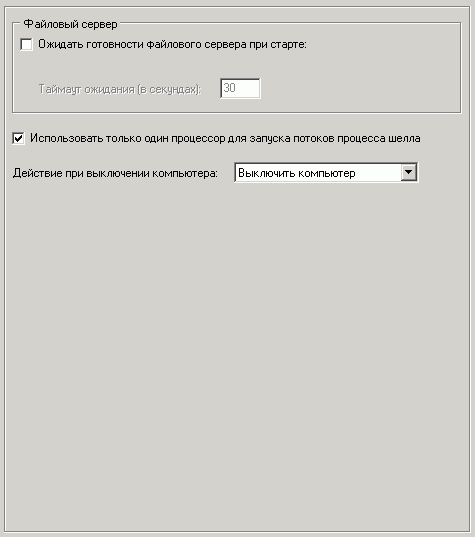

Наиболее важные опции на этой вкладке:
Ожидать готовности файлового сервера при старте
Если вы используете ссылки на серверные папки в настройках шелла (например, указываете ссылку на сетевую папку галереи картинок, доски объявлений и на любые другие внешние ресурсы),
то данная опция может быть полезна. Существуют ситуации, когда при старте системы сетевые подключения занимают определенное время и данные пути могут быть недоступны первое время.
Если в вашем случае такое имеет место, то воспользуйтесь данной опцией, указав путь к любой постоянной папке на сервере, готовность которой будет проверяться.
Лучше всего если это будет корневая папка со всеми настройками (например, \\server\data), хотя может быть и любая другая. Однако указывать несуществующий путь или путь без папки вида \\server\ нельзя!
При включенной опции и старте шелла будет произведено ожидание готовности сетевых подключений. Таймаут ожидания означает максимальное время в секундах, в течении которого будет ожидаться готовность.
Использовать только один процессор для запуска потоков процесса шелла
На некоторых многопроцессорных системах очень редко может возникать проблема самопроизвольной перезагрузки шелла после старта. Для ее решения включите данную опцию.
Действие при выключении компьютера
Выберите нужное действие при выборе пользователем пункта меню "Выключить компьютер".